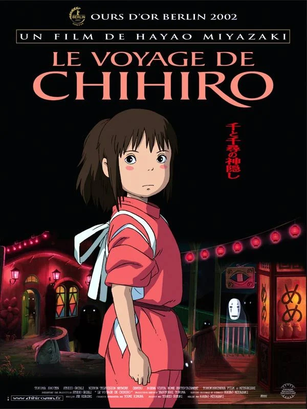

Le Voyage de Chihiro
Synopsis: Une jeune fille se retrouve dans un monde magique peuplé d'esprits et doit trouver un moyen de libérer ses parents transformés en cochons.
Auteur : Hayao Miyazaki
Scénariste : Hayao Miyazaki
Date de réalisation : 2001
Durée : 2h5
Acteurs principaux : Rumi Hiiragi, Miyu Irino, Mari Natsuki